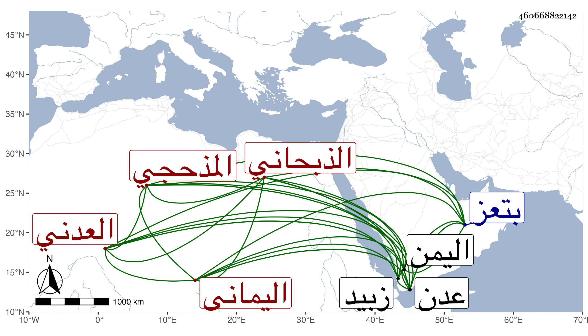

0902Sakhawi.DawLamic.ITO20230111-ara1.EIS1600.460668822142
Biography ID: 460668822142
948
سعيد بن أحمد سابق الدين المذحجي الذبحاني اليماني العدني والد عبد الله ومحمد الآتيين ، وذبحان بضم المعجمة ثم موحدة ساكنة بعدها حاء مهملة وآخره نون قرية قريبة من حصن الدملوه إحدى قلاع اليمن . تفقه بالجمال الخياط وطبقته بتعز واشتغل بزبيد أيضا وحضر مجالس ابن المقري وسمع على ابن الجزري أشياء من تصانيفه وغيرها ، وقدم بعد الأربعين إلى عدن فاستوطنها واقتنى كتبا نفيسة وكان ضنينا بها وكذا استولى على عدة خزائن فأعدمها ولم يكن بالمحمود مع إقباله على التصوف والمباحثة فيه والتكلف لذلك إلى أن مات عن سن في أواخر رجب سنة سبع وثمانين وكان إليه تدريس الحديث بالظاهرية بعدن عفا الله عنه وترجمته عندي مطولة في كلام بعض الآخذين عني .
